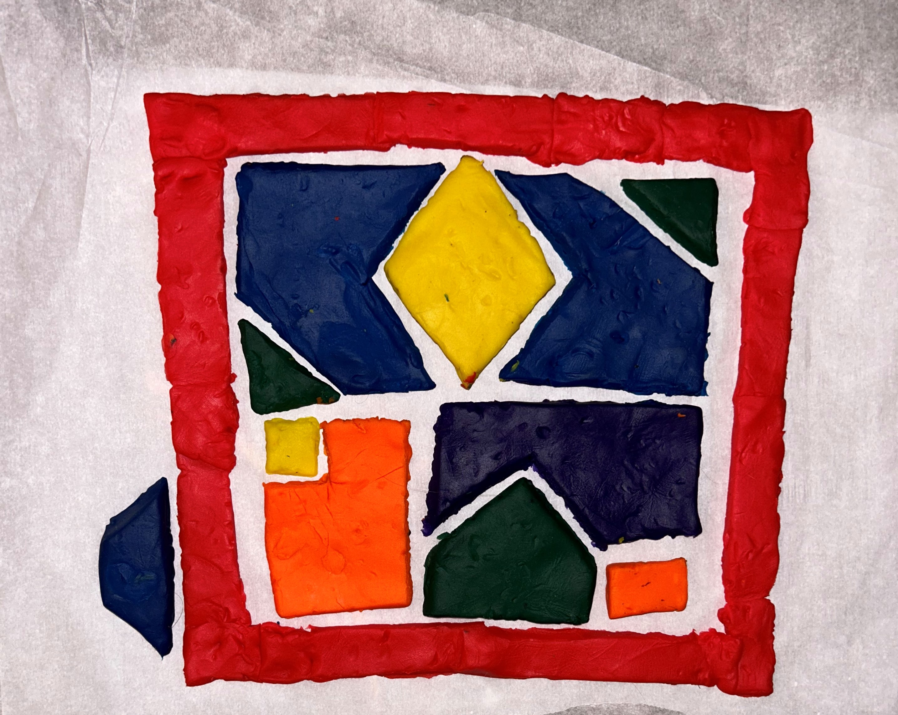

The Challenge - Makey Makey: House of Shapes
 The Challenge
The Challenge
Your challenge is to create a 2D model of a house out of dough that contains shapes and a circuit. You will draw a blueprint that meets certain requirements to plan your home and will then use Scratch and Makey Makey to program your home to describe the shapes when touched by users.

What I'll Learn
- I CAN create an interactive home using Makey Makey and Scratch.
- I CAN name, identify, and describe different 2D shapes.
- I CAN draw a blueprint.